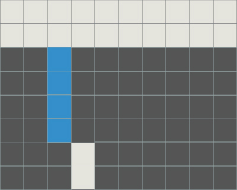
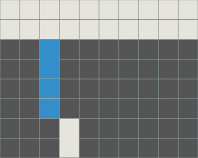
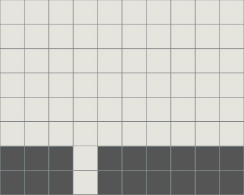
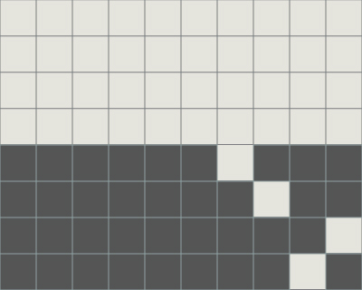
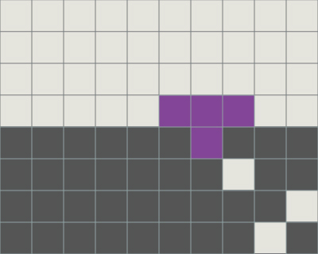
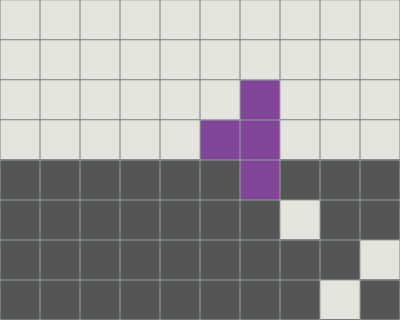
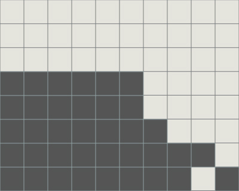
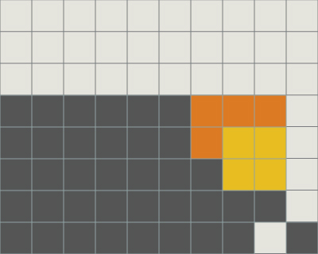
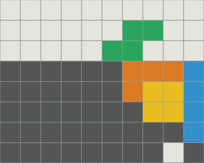

堀り 対人戦における堀
堀りとは相手の攻撃などにより高くなった地形をライン消去によって低く保つことです．
直列穴
直列穴とはある程度位置がそろった穴のことです．多くの場合は相手のテトリスやTSDなどの攻撃によってできます．
直列穴はテトリスにするのが理想です．
TSpinもうまく合わせられるとよいでしょう．
テトリスは4列，TSDは2列からなっていることから，積まれているライン数を考える事が大事です．
TSpinは屋根をつけるとミノの置き方に大きな制限がかかるので気をつけましょう．
  
穴バラ
穴バラとは不連続な穴の集合を指すことにします．穴バラが送られてきそうなときに相殺することも大事ですが，
せり上がってしまった場合は出来る限り早めに対処が要求されます．
その際に気をつけなければならないことは，最上部にある穴以外も見ることです．
一番上の穴にだけ注目し，その他の穴をふさぐミノの起き方をすると，スムーズに掘ることはむずかしいでしょう．
  
堀りと同時にコンボを行うことを掘りコンボと呼ぶことにします．
これは下の穴々の位置とネクストを見ることを巧みに行われなければならないため，容易ではありませんが
ときにはより長く生き延びるための重要テクニックとなるでしょう．
また，穴の位置や状況に余裕がある場合，相殺を当てなければならない場合は，
更に積み込んでTSやテトリスに移行することも考慮に入れてもよいでしょう．
地形や堀りの状況を著しく悪化させることはあってはならないため，判断が難しいです．
  
ミノと地形の関係
ミノの使い方は掘りにおいても重要です．ライン消去をした結果が同じになる異なるミノ，
複数ミノによるライン消去で順番を問うもの・問わないものなどを考えることができます．
１つのミノに固執して，本来ならば代替可能なミノの存在を忘れてしまいがちです．
そういった意味で，受けられるミノを広く捉える視野も大切です．